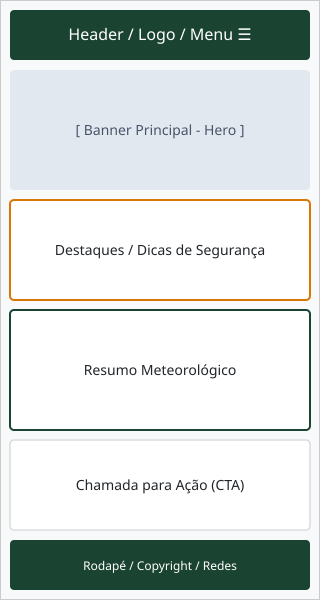
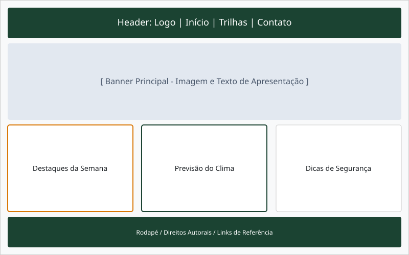

1. Nome do Site
Nome Escolhido: Trilhas & Aventura
Razão da Escolha: Este nome foi selecionado por transmitir de forma direta e atrativa a proposta da plataforma, que é conectar entusiastas de caminhadas ao ar livre com informações de qualidade sobre ecoturismo e rotas regionais.
2. Finalidade do Site
O site Trilhas & Aventura funciona como um guia interativo de ecoturismo local. O objetivo principal é disponibilizar um repositório acessível de trilhas com detalhes de extensão e nível de dificuldade, oferecer dicas essenciais de segurança para caminhadas na natureza, exibir informações sobre o clima e permitir a inscrição em grupos de caminhada guiada através de um formulário interativo.
3. Cenários
Os cenários abaixo representam as principais dúvidas e necessidades do nosso público-alvo ao acessar a plataforma:
- Cenário 1: "Sou iniciante em caminhadas na natureza e quero levar minha família no fim de semana. Como posso encontrar uma trilha de nível fácil, curta e segura na minha região?"
- Cenário 2: "Tenho interesse em participar de caminhadas com guias experientes. Onde posso me cadastrar para fazer parte dos próximos grupos de aventura?"
4. Esquema de Cores
A paleta de cores reflete a temática de natureza e aventura. As cores escolhidas são utilizadas em todo o design do projeto e aplicadas neste próprio documento:
- Cor Primária (#1B4332 - Verde Floresta): Utilizada no cabeçalho, rodapé, títulos principais e bordas de destaque.
- Cor Secundária (#D97706 - Laranja Aventura): Utilizada para botões de ação, realces e detalhes visuais.
- Cor Neutra Escura (#212529 - Grafite): Utilizada para o texto do corpo da página para garantir alto contraste e legibilidade.
- Cor Neutra Clara (#F8F9FA - Cinza Claro): Utilizada para o fundo principal e áreas de conteúdo secundário.
#1B4332
#D97706
#212529
#F8F9FA
5. Tipografia
Para garantir legibilidade e apelo visual moderno, foram selecionadas duas fontes do Google Fonts:
- Montserrat (Sans-serif): Aplicada em todos os títulos (
<h1>,<h2>,<h3>) para proporcionar destaque e uma identidade marcante. - Open Sans (Sans-serif): Aplicada no texto do corpo, parágrafos, listas e elementos de formulário para garantir leitura fluida e clara.
6. Wireframes
Esboços de layout planejados para a página inicial (Home) nas visualizações para dispositivos móveis e telas grandes:
Visualização Móvel (Mobile)

Visualização Ampla (Desktop)
